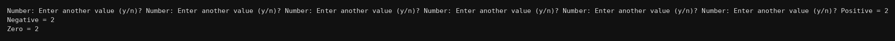

package basics;
import java.util.Scanner;
public class Q213 {
public static void main(String[] args) {
Scanner kb = new Scanner(System.in);
int p=0, n=0, z=0;
String ch;
do{
System.out.print("Number: ");
int x = kb.nextInt();
if(x>0) p++;
else if(x<0) n++;
else z++;
System.out.print("Enter another value (y/n)? ");
ch = kb.next();
}while(ch.equals("y"));
System.out.println("Positive = "+p);
System.out.println("Negative = "+n);
System.out.println("Zero = "+z);
}
}